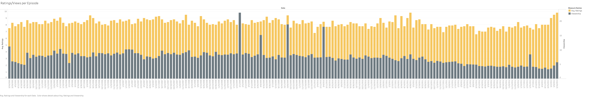

When it comes to television shows, or anything in the entertainment industry, viewership and ratings are widely thought of as two of the most important metrics for success. While each has its own individual impact, many wonder which is more important, and what will lead to a more successful TV show. Should firms market heavily in order to draw as many viewers as possible, or should they focus more on having the best possible product? Does a good show attract viewership automatically, or do popular shows just keep getting better? The Office is a prime example in thinking about these questions. It was one of the most popular shows of its time, and it aired for nearly a decade. Especially now, people look back on media and question whether it was over or under-rated. I will look to see whether or not The Office deserves its high praise, or if it is simply overrated by mainstream media.
Starting with the dataset, I found that Ratings and Viewership were fairly connected. Using R, I found they had an r-score of about 0.487. This isn't high correlation, by any means, but it does certainly imply the two are connected. Visually, there doesn't seem to be much correlation between ratings and viewership, even on the more popular episodes. Although towards the end of the show, around season seven, ratings and viewship both start to fall off, viewership more noticeably. Of course, this is around the same time when Steve Carrell left the show, and so surely there were many fans who stopped watching when Michael left. However, this may also show just how difficult it is to sustain success as a top show. It is slightly difficult to see on the graph below, but the dark grey represents the viewership, in millions per episode, and the yellow shows the IMDb rating for each episode.
 By the way, here is where I got my data from. The Office Data